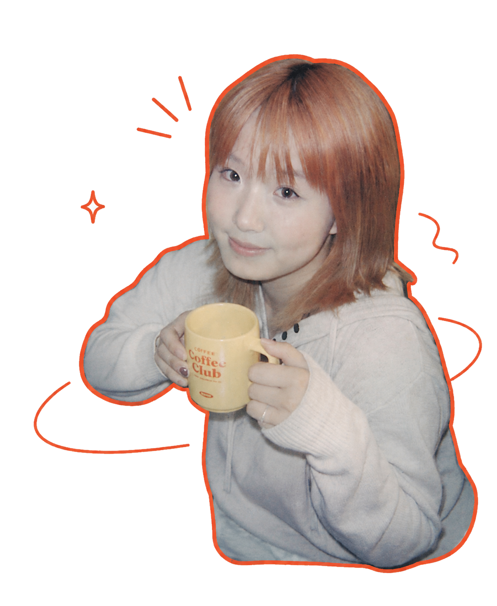

定义问题
研究用户、场景与现实约束，判断真正需要解决的核心问题。
PRODUCT DESIGN · AI · HCI · GAMES

我是 Mars。我从问题定义出发，设计产品结构、玩法机制与交互流程，并推动原型、协作落地和测试迭代。现在的作品覆盖游戏与 AI 产品，也在继续探索 HCI 和软硬件交互。
↓HOW I WORK
研究用户、场景与现实约束，判断真正需要解决的核心问题。
把产品结构、玩法机制、信息架构、视觉语言与交互节奏放进同一套逻辑，构建自洽、完整且具有审美一致性的体验场域。
协调技术、内容与视觉完成可运行版本，再通过测试和反馈持续迭代。
SELECTED WORK / 04
从“不知道去哪”开始，让 AI 结合现实条件与东方玄学灵感，生成一段可以立刻出发的城市体验。


独自滑雪下山，去酒馆喝一杯；在一次次往返中，让陌生关系慢慢发生。

一场关于装成机器人、熬到下班的荒诞工作模拟。

和 15 人团队一起，把面具、川剧变脸与快速战斗揉进一场冒险。
ABOUT MARS
我的实践包括产品设计、游戏策划与 AI 应用。我关注一项体验从问题定义、系统设计和交互流程，到技术协作、内容表达与迭代落地的全过程。当前作品以游戏和 AI 产品为主，接下来也会继续探索 HCI、实体交互与软硬件结合。